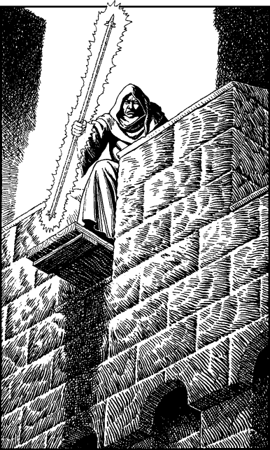

270
While riding the road to Duadon, you search the bags which hang from the saddle of your newfound horse. Among the things they contain are a spare Eldenoran uniform and rain-cape. You throw the uniform away, but you sling the voluminous cape around your shoulders and fix the clasp under your chin. Mindful of the increased risks of detection the nearer you get to Duadon, this simple black cape serves two useful purposes: it keeps hidden your Kai clothes and gives you the outward appearance of an Eldenoran horseman. (You need not record this cape on your Action Chart.)
Among the other items you discover in the saddle-bags are:
- Enough food for 2 Meals
- Mace
- Rope
- Tinderbox
- 8 Lune (equivalent to 2 Gold Crowns)
- Mirror
If you decide to keep any of these items, remember to adjust your Action Chart accordingly.
During the remaining daylight hours, you frequently see units of Eldenorans on the road, most marching westwards with long pikes over their shoulders. None of them challenge you as you pass them by, for they assume you are a cavalry scout going about his duty. After spending a comfortable night in the loft of a deserted hay barn, you continue your ride at first light and reach the outskirts of Duadon shortly before midday.
The Eldenoran capital is a grey and unlovely place. Its cold stone buildings bear the scars of a city whose history is one of near-continual warfare. The roads leading to the city gates are crowded with regiments on the move, and soon you find yourself caught up to a large body of troops which is snaking slowly towards Duadon’s heavily fortified western approach. The mood of the troops is one of studied indifference, a condition which often prevails in those who have become emotionally numbed by the horrors of war. As this sullen mass moves through the west gate, you glance up at the battlements and notice a red-robed figure clutching a long staff of glowing white metal. A tingle of apprehension runs the length of your spine when you recognize the figure to be a Cener Druid. The staff he holds radiates a magical aura and you sense at once that he is scanning the arriving soldiers, using the staff to determine, amongst other things, if any have contracted plague. Suddenly the Cener becomes agitated and he sprints the length of the battlements to sound an alarm bell. Within a few moments, the west gate is sealed by a heavy iron portcullis and panic sweeps through the troops who have been shut outside. You look up at the battlements once more and this time your heart skips a beat; the Cener is pointing his glowing staff directly at your head.

From out of the crowd of panic-stricken soldiers there bursts a unit of Duadon guards armed with spears and throwing nets. They are led by a bearded, one-eyed sergeant who barks an order at you to throw down your weapons and dismount from your horse.
‘Do as I say,’ he growls, murderously, ‘or I’ll cut out your liver and feed it to the crows.’
If you decide to do as he says, turn to 236.
If you choose to ignore his command and get ready to defend yourself, turn to 50.